Implementacion del codigo#
Librerias#
import pandas as pd
import numpy as np
import matplotlib.pyplot as plt
import seaborn as sns
from sklearn.linear_model import Ridge, Lasso, LogisticRegression
from sklearn.impute import SimpleImputer
from sklearn.preprocessing import StandardScaler, OneHotEncoder
from sklearn.model_selection import train_test_split, GridSearchCV,StratifiedKFold
from sklearn.metrics import accuracy_score, roc_auc_score, f1_score,precision_score, classification_report, confusion_matrix,recall_score
from sklearn.metrics import r2_score,mean_absolute_error,root_mean_squared_error
from scipy.sparse import hstack,csr_matrix
Cargado de datos#
df=pd.read_csv("vehicles.csv")
df.head()
| id | url | region | region_url | price | year | manufacturer | model | condition | cylinders | ... | size | type | paint_color | image_url | description | county | state | lat | long | posting_date | |
|---|---|---|---|---|---|---|---|---|---|---|---|---|---|---|---|---|---|---|---|---|---|
| 0 | 7222695916 | https://prescott.craigslist.org/cto/d/prescott... | prescott | https://prescott.craigslist.org | 6000 | NaN | NaN | NaN | NaN | NaN | ... | NaN | NaN | NaN | NaN | NaN | NaN | az | NaN | NaN | NaN |
| 1 | 7218891961 | https://fayar.craigslist.org/ctd/d/bentonville... | fayetteville | https://fayar.craigslist.org | 11900 | NaN | NaN | NaN | NaN | NaN | ... | NaN | NaN | NaN | NaN | NaN | NaN | ar | NaN | NaN | NaN |
| 2 | 7221797935 | https://keys.craigslist.org/cto/d/summerland-k... | florida keys | https://keys.craigslist.org | 21000 | NaN | NaN | NaN | NaN | NaN | ... | NaN | NaN | NaN | NaN | NaN | NaN | fl | NaN | NaN | NaN |
| 3 | 7222270760 | https://worcester.craigslist.org/cto/d/west-br... | worcester / central MA | https://worcester.craigslist.org | 1500 | NaN | NaN | NaN | NaN | NaN | ... | NaN | NaN | NaN | NaN | NaN | NaN | ma | NaN | NaN | NaN |
| 4 | 7210384030 | https://greensboro.craigslist.org/cto/d/trinit... | greensboro | https://greensboro.craigslist.org | 4900 | NaN | NaN | NaN | NaN | NaN | ... | NaN | NaN | NaN | NaN | NaN | NaN | nc | NaN | NaN | NaN |
5 rows × 26 columns
Funciones#
def Summary(data, sheet):
print(f"Hoja: {sheet}")
# Crear la tabla de resumen
resumen = {
"Cantidad de filas": data.shape[0],
"Cantidad de columnas": data.shape[1],
"Datos faltantes": data.isnull().sum().sum(),
"Filas duplicadas": data.duplicated().sum()
}
# Convertir el resumen en un DataFrame
ResumenHoja = pd.DataFrame(resumen, index=["Resumen"])
print("\nResumen:")
display(ResumenHoja)
print("\nEncabezado:")
display(data.head())
Analisis exploratorio de los datos#
Summary(df,'df')
Hoja: df
Resumen:
| Cantidad de filas | Cantidad de columnas | Datos faltantes | Filas duplicadas | |
|---|---|---|---|---|
| Resumen | 426880 | 26 | 1655336 | 0 |
Encabezado:
| id | url | region | region_url | price | year | manufacturer | model | condition | cylinders | ... | size | type | paint_color | image_url | description | county | state | lat | long | posting_date | |
|---|---|---|---|---|---|---|---|---|---|---|---|---|---|---|---|---|---|---|---|---|---|
| 0 | 7222695916 | https://prescott.craigslist.org/cto/d/prescott... | prescott | https://prescott.craigslist.org | 6000 | NaN | NaN | NaN | NaN | NaN | ... | NaN | NaN | NaN | NaN | NaN | NaN | az | NaN | NaN | NaN |
| 1 | 7218891961 | https://fayar.craigslist.org/ctd/d/bentonville... | fayetteville | https://fayar.craigslist.org | 11900 | NaN | NaN | NaN | NaN | NaN | ... | NaN | NaN | NaN | NaN | NaN | NaN | ar | NaN | NaN | NaN |
| 2 | 7221797935 | https://keys.craigslist.org/cto/d/summerland-k... | florida keys | https://keys.craigslist.org | 21000 | NaN | NaN | NaN | NaN | NaN | ... | NaN | NaN | NaN | NaN | NaN | NaN | fl | NaN | NaN | NaN |
| 3 | 7222270760 | https://worcester.craigslist.org/cto/d/west-br... | worcester / central MA | https://worcester.craigslist.org | 1500 | NaN | NaN | NaN | NaN | NaN | ... | NaN | NaN | NaN | NaN | NaN | NaN | ma | NaN | NaN | NaN |
| 4 | 7210384030 | https://greensboro.craigslist.org/cto/d/trinit... | greensboro | https://greensboro.craigslist.org | 4900 | NaN | NaN | NaN | NaN | NaN | ... | NaN | NaN | NaN | NaN | NaN | NaN | nc | NaN | NaN | NaN |
5 rows × 26 columns
df.info()
<class 'pandas.core.frame.DataFrame'>
RangeIndex: 426880 entries, 0 to 426879
Data columns (total 26 columns):
# Column Non-Null Count Dtype
--- ------ -------------- -----
0 id 426880 non-null int64
1 url 426880 non-null object
2 region 426880 non-null object
3 region_url 426880 non-null object
4 price 426880 non-null int64
5 year 425675 non-null float64
6 manufacturer 409234 non-null object
7 model 421603 non-null object
8 condition 252776 non-null object
9 cylinders 249202 non-null object
10 fuel 423867 non-null object
11 odometer 422480 non-null float64
12 title_status 418638 non-null object
13 transmission 424324 non-null object
14 VIN 265838 non-null object
15 drive 296313 non-null object
16 size 120519 non-null object
17 type 334022 non-null object
18 paint_color 296677 non-null object
19 image_url 426812 non-null object
20 description 426810 non-null object
21 county 0 non-null float64
22 state 426880 non-null object
23 lat 420331 non-null float64
24 long 420331 non-null float64
25 posting_date 426812 non-null object
dtypes: float64(5), int64(2), object(19)
memory usage: 84.7+ MB
df.describe()
| id | price | year | odometer | county | lat | long | |
|---|---|---|---|---|---|---|---|
| count | 4.268800e+05 | 4.268800e+05 | 425675.000000 | 4.224800e+05 | 0.0 | 420331.000000 | 420331.000000 |
| mean | 7.311487e+09 | 7.519903e+04 | 2011.235191 | 9.804333e+04 | NaN | 38.493940 | -94.748599 |
| std | 4.473170e+06 | 1.218228e+07 | 9.452120 | 2.138815e+05 | NaN | 5.841533 | 18.365462 |
| min | 7.207408e+09 | 0.000000e+00 | 1900.000000 | 0.000000e+00 | NaN | -84.122245 | -159.827728 |
| 25% | 7.308143e+09 | 5.900000e+03 | 2008.000000 | 3.770400e+04 | NaN | 34.601900 | -111.939847 |
| 50% | 7.312621e+09 | 1.395000e+04 | 2013.000000 | 8.554800e+04 | NaN | 39.150100 | -88.432600 |
| 75% | 7.315254e+09 | 2.648575e+04 | 2017.000000 | 1.335425e+05 | NaN | 42.398900 | -80.832039 |
| max | 7.317101e+09 | 3.736929e+09 | 2022.000000 | 1.000000e+07 | NaN | 82.390818 | 173.885502 |
Analisis de NA(EDA)#
Revisamos los porcentajes de NA para luego realizar su tratamiento en el preprocesamiento de los datos
NA_porcentaje = df.isna().mean() * 100
print(NA_porcentaje.to_string())
id 0.000000
url 0.000000
region 0.000000
region_url 0.000000
price 0.000000
year 0.282281
manufacturer 4.133714
model 1.236179
condition 40.785232
cylinders 41.622470
fuel 0.705819
odometer 1.030735
title_status 1.930753
transmission 0.598763
VIN 37.725356
drive 30.586347
size 71.767476
type 21.752717
paint_color 30.501078
image_url 0.015930
description 0.016398
county 100.000000
state 0.000000
lat 1.534155
long 1.534155
posting_date 0.015930
Eliminamos la variable county debido a que tiene el 100% de NA
df=df.drop(columns="county")
Graficas variables numericas y filtracion de outliers#
Realizamos las graficas de las variables numericas
num=['price','year','odometer']
df[num].hist(bins=30, figsize=(12, 8))
plt.tight_layout()
plt.suptitle('Distribuciones de variables numéricas', y=1.02)
plt.show()
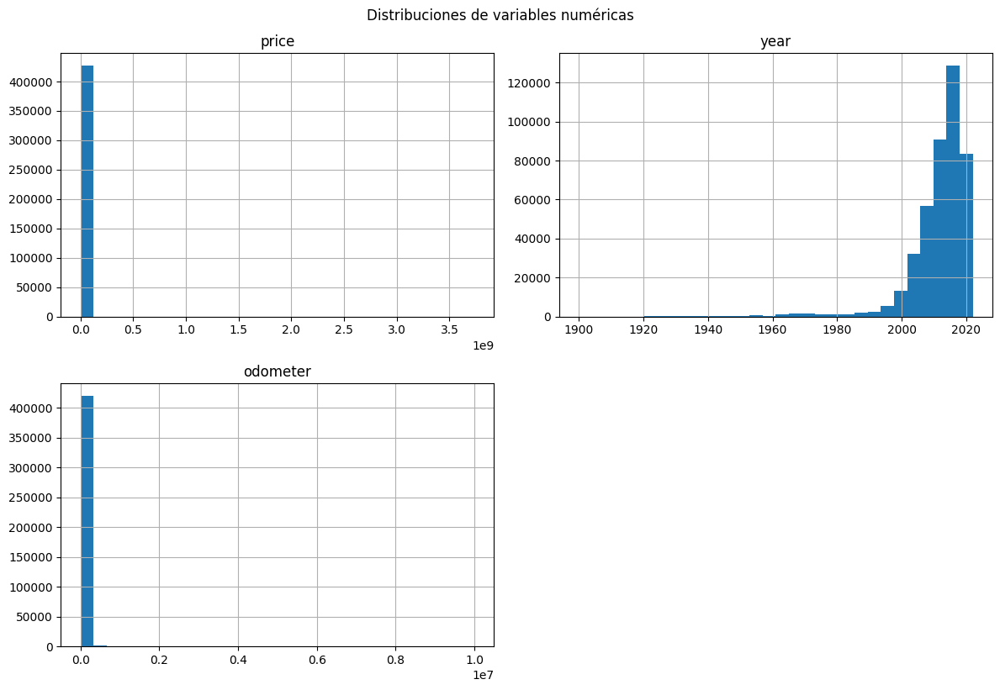
for numerica in num:
sns.boxplot(data=df,y=numerica)
plt.title(f'Boxplot de {numerica}')
plt.show()
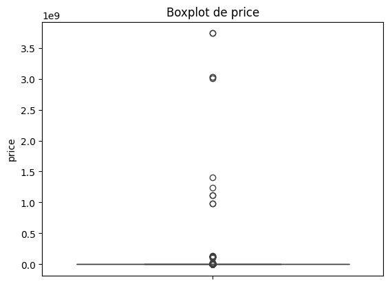
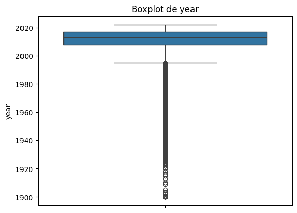
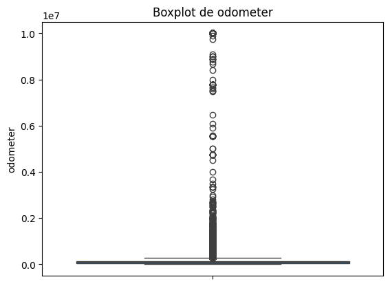
En el caso de la variable año sus datos atipicos si se pueden considerar como casos reales ya que los autos han existido desde el inicio del siglo 20
Revisaremos los valores atipicos de la variable price para tomar en cuenta en la parte de preprocesamiento
Q1 = df['price'].quantile(0.25)
Q3 = df['price'].quantile(0.75)
IQR = Q3 - Q1
lower_bound = Q1 - 1.5 * IQR
upper_bound = Q3 + 1.5 * IQR
outliers_price = df[(df['price'] < lower_bound) | (df['price'] > upper_bound)]
print("Cantidad de outliers en price:", len(outliers_price))
print(f"Rango superior de atípicos: valores mayores a {upper_bound}")
print("\nEjemplo de outliers (los más bajos y más altos):")
print(outliers_price['price'].sort_values().head(5))
print(outliers_price['price'].sort_values().tail(5))
Cantidad de outliers en price: 8177
Rango superior de atípicos: valores mayores a 57364.375
Ejemplo de outliers (los más bajos y más altos):
414596 57400
336337 57400
303716 57400
364509 57427
30699 57460
Name: price, dtype: int64
37410 3009548743
91576 3024942282
257840 3024942282
356716 3736928711
318592 3736928711
Name: price, dtype: int64
Podemos observar que los outliers en la variable price son todos los valores mayores a 57 mil dolares, sin embargo este precio si es razonable a comparacion de los precios completamente irrealistas de algunas filas lo que lleva a que se distorsione el histograma
Como son valores realmente irrealistas se deben realizar la filtracion para la variable price ya que pueden distorcionar el escalado y la regresion mas adelante. Esto se realizara durante el preprocesamiento de datos
Revisamos los outliers de odometer
Q1_o = df['odometer'].quantile(0.25)
Q3_o = df['odometer'].quantile(0.75)
IQR_o = Q3_o - Q1_o
lower_bound_o = Q1_o - 1.5 * IQR_o
upper_bound_o = Q3_o + 1.5 * IQR_o
outliers_odometer = df[(df['odometer'] < lower_bound) | (df['odometer'] > upper_bound)]
print("Cantidad de outliers en odometer:", len(outliers_odometer))
print(f"Rango superior de atípicos: valores mayores a {upper_bound}")
print("\nEjemplo de outliers (los más bajos y más altos):")
print(outliers_odometer['odometer'].sort_values().head(5))
print(outliers_price['odometer'].sort_values().tail(5))
Cantidad de outliers en odometer: 272897
Rango superior de atípicos: valores mayores a 57364.375
Ejemplo de outliers (los más bajos y más altos):
310172 57366.0
169986 57366.0
385399 57366.0
363379 57367.0
363258 57367.0
Name: odometer, dtype: float64
159678 NaN
159682 NaN
159685 NaN
159769 NaN
290548 NaN
Name: odometer, dtype: float64
Podemos observar que los valores atipicos de la variable odometer son valores mayores a 2277300 lo cual es un valor de odometer bastante alto y que los valores mas altos de outliers son atipicos y debemos imputarlos primero antes de poder tomar cualquier otra accion. Esto se realizara durante el preprocesamiento de datos
Realizamos un scatterplot de latitud y longitud
plt.scatter(df['long'], df['lat'], alpha=0.5)
plt.xlabel("Longitud")
plt.ylabel("Latitud")
plt.title("Distribución espacial de puntos")
plt.show()
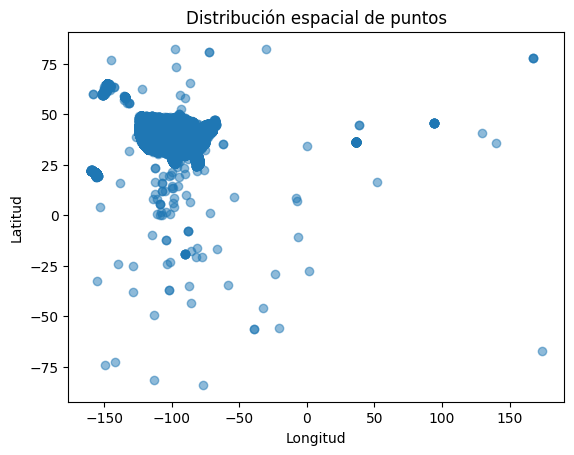
Codificamos la variable posting date como fecha
df['posting_date']=pd.to_datetime(df['posting_date'],format='%d/%m/%Y',errors="coerce")
Realizamos los graficos de variables categoricas
categoricas=["region","manufacturer","condition","cylinders","fuel","title_status","transmission","drive","size","type","paint_color","state"]
for col in categoricas:
print(df[col].value_counts())
sns.countplot(data=df, x=col, order=df[col].value_counts().index)
plt.title(f'Distribución de {col}')
plt.xticks(rotation=45)
plt.show()
region
columbus 3608
jacksonville 3562
spokane / coeur d'alene 2988
eugene 2985
fresno / madera 2983
...
meridian 28
southwest MS 14
kansas city 11
fort smith, AR 9
west virginia (old) 8
Name: count, Length: 404, dtype: int64
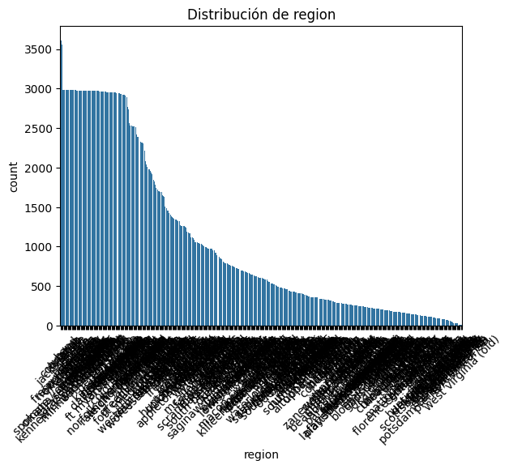
manufacturer
ford 70985
chevrolet 55064
toyota 34202
honda 21269
nissan 19067
jeep 19014
ram 18342
gmc 16785
bmw 14699
dodge 13707
mercedes-benz 11817
hyundai 10338
subaru 9495
volkswagen 9345
kia 8457
lexus 8200
audi 7573
cadillac 6953
chrysler 6031
acura 5978
buick 5501
mazda 5427
infiniti 4802
lincoln 4220
volvo 3374
mitsubishi 3292
mini 2376
pontiac 2288
rover 2113
jaguar 1946
porsche 1384
mercury 1184
saturn 1090
alfa-romeo 897
tesla 868
fiat 792
harley-davidson 153
ferrari 95
datsun 63
aston-martin 24
land rover 21
morgan 3
Name: count, dtype: int64
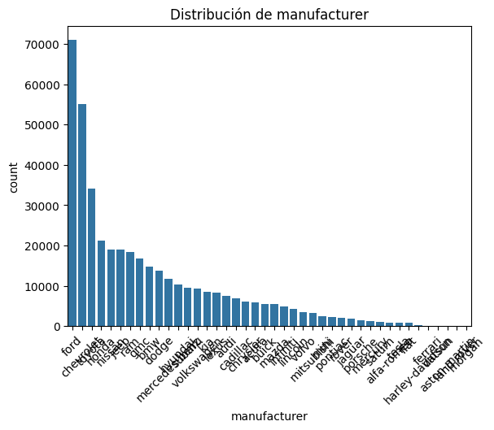
condition
good 121456
excellent 101467
like new 21178
fair 6769
new 1305
salvage 601
Name: count, dtype: int64
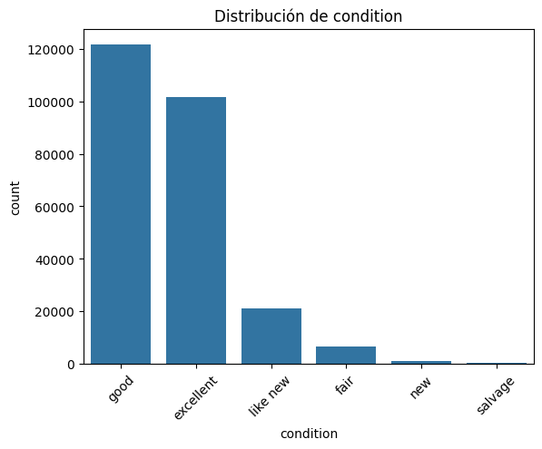
cylinders
6 cylinders 94169
4 cylinders 77642
8 cylinders 72062
5 cylinders 1712
10 cylinders 1455
other 1298
3 cylinders 655
12 cylinders 209
Name: count, dtype: int64
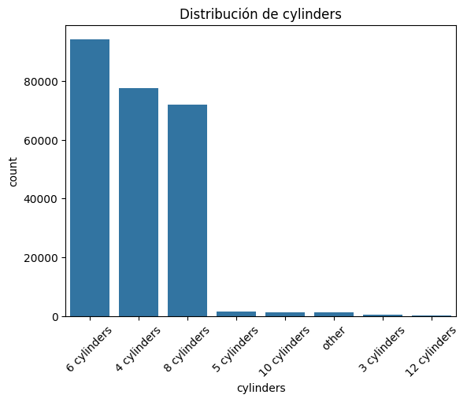
fuel
gas 356209
other 30728
diesel 30062
hybrid 5170
electric 1698
Name: count, dtype: int64
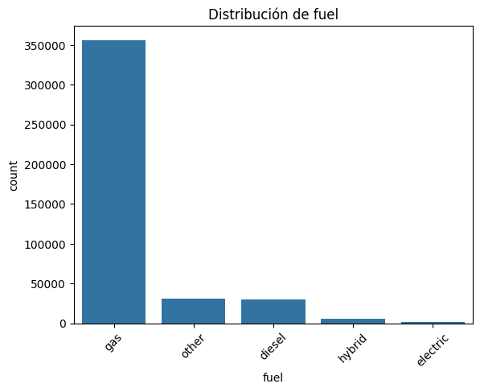
title_status
clean 405117
rebuilt 7219
salvage 3868
lien 1422
missing 814
parts only 198
Name: count, dtype: int64
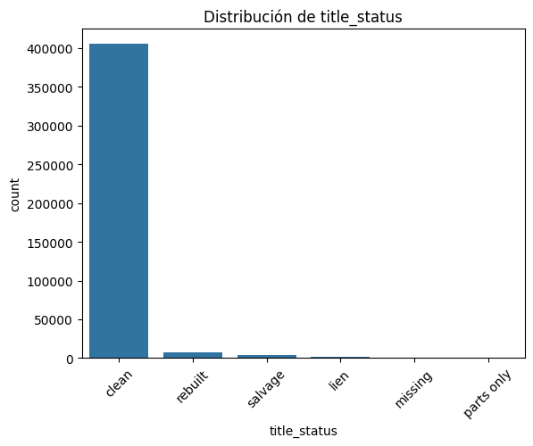
transmission
automatic 336524
other 62682
manual 25118
Name: count, dtype: int64
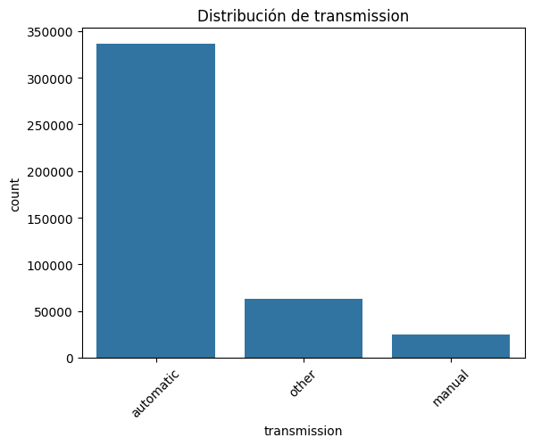
drive
4wd 131904
fwd 105517
rwd 58892
Name: count, dtype: int64
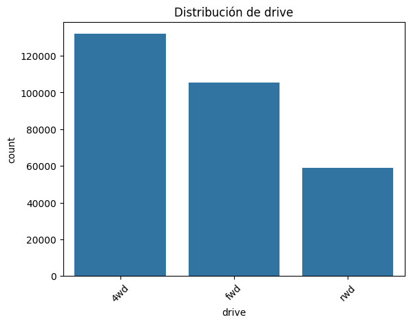
size
full-size 63465
mid-size 34476
compact 19384
sub-compact 3194
Name: count, dtype: int64
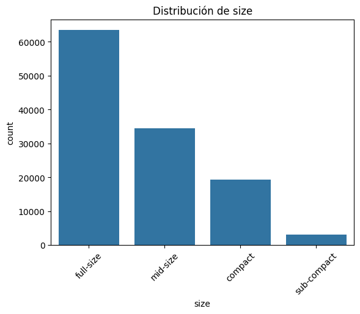
type
sedan 87056
SUV 77284
pickup 43510
truck 35279
other 22110
coupe 19204
hatchback 16598
wagon 10751
van 8548
convertible 7731
mini-van 4825
offroad 609
bus 517
Name: count, dtype: int64
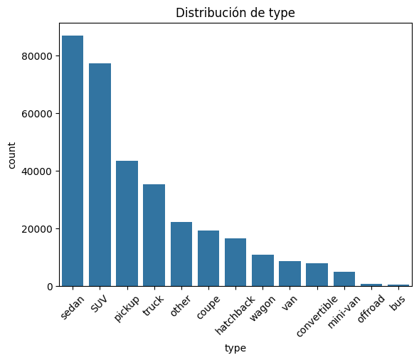
paint_color
white 79285
black 62861
silver 42970
blue 31223
red 30473
grey 24416
green 7343
custom 6700
brown 6593
yellow 2142
orange 1984
purple 687
Name: count, dtype: int64
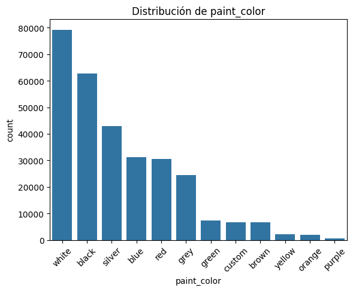
state
ca 50614
fl 28511
tx 22945
ny 19386
oh 17696
or 17104
mi 16900
nc 15277
wa 13861
pa 13753
wi 11398
co 11088
tn 11066
va 10732
il 10387
nj 9742
id 8961
az 8679
ia 8632
ma 8174
mn 7716
ga 7003
ok 6792
sc 6327
mt 6294
ks 6209
in 5704
ct 5188
al 4955
md 4778
nm 4425
mo 4293
ky 4149
ar 4038
ak 3474
la 3196
nv 3194
nh 2981
dc 2970
me 2966
hi 2964
vt 2513
ri 2320
sd 1302
ut 1150
wv 1052
ne 1036
ms 1016
de 949
wy 610
nd 410
Name: count, dtype: int64
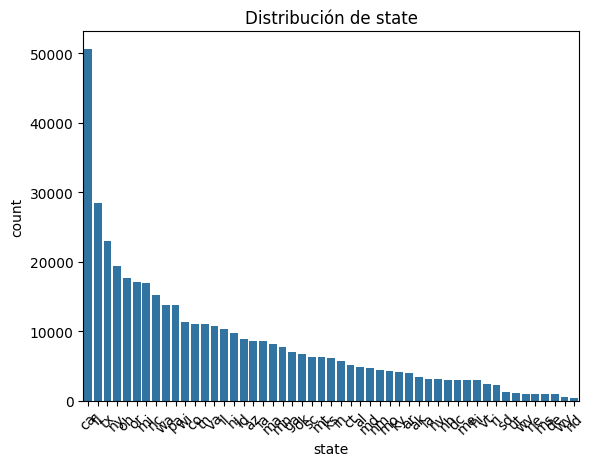
En estos graficos se pueden observar las categorias de cada una de las variables y cuales son las que mas resaltan
Realizamos la matriz de correlacion de las variables numericas
matriz=df[num].corr()
plt.figure(figsize=(12,8))
sns.heatmap(matriz, annot=True, cmap="coolwarm", fmt=".2f")
plt.title("Matriz de correlación de variables numéricas")
plt.show()
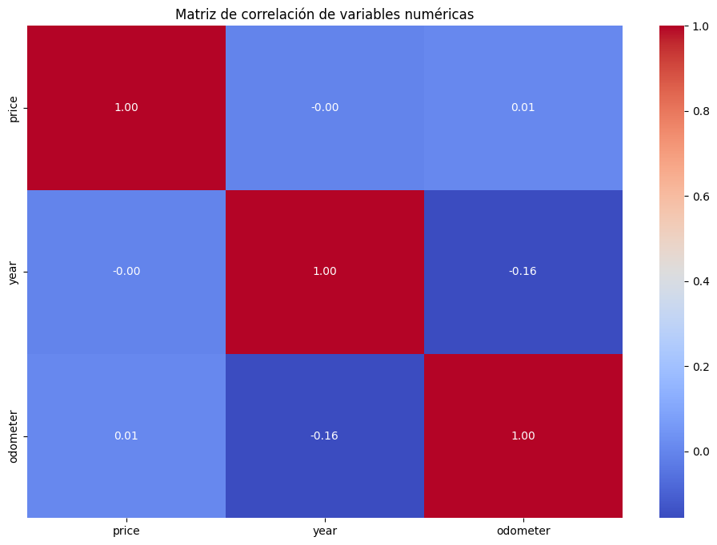
Se pueden observar que las correlaciones de las variables numericas es bastante baja. Lo cual es raro para las variables que deberian estar relacionadas. se realizara la matriz de correlacion despues del preprocesamiento.
Preprocesamiento#
En primer lugar se eliminan las variables que no son predictorias o importantes para el modelo
drop=["id","url","region_url","VIN","image_url","description","size","posting_date","model"]
df=df.drop(columns=drop)
Tratamiento de outliers#
Ahora se trataran los outliers de la variable price y la variable odometer. El tratamiento de price es clave para poder crear la variable HighDemand
Primero se revisan cuantos valores de 0 hay en las 2 variables
zeros_count = (df['odometer'] == 0).sum()
Zeros=(df['price'] == 0).sum()
print(f"Cantidad de registros con odometer = 0: {zeros_count}")
print(f"Cantidad de registros con price = 0: {Zeros}")
Cantidad de registros con odometer = 0: 1965
Cantidad de registros con price = 0: 32895
Volvemos los 0 de las variables como NA para imputarlos despues
df['odometer'] = df['odometer'].replace(0, np.nan)
df['price'] = df['price'].replace(0, np.nan)
print("NaN en odometer:", df['odometer'].isna().sum())
print("NaN en price:", df['price'].isna().sum())
NaN en odometer: 6365
NaN en price: 32895
Utilizamos el metodo de percentiles para filtrar los outliers de ambas variables
p_low_price, p_high_price = df['price'].quantile([0.005, 0.995])
p_low_odo, p_high_odo = df['odometer'].quantile([0.005, 0.995])
print("Umbral price:", p_low_price, "-", p_high_price)
print("Umbral odometer:", p_low_odo, "-", p_high_odo)
Umbral price: 3.0 - 78900.0
Umbral odometer: 1.0 - 351147.4899999976
Si bien los umbrales nos muestran los outliers reducidos, se utilizaran valores mas realistas de precio y odometer para eliminar valores irreales de datos usados
min_price_business = 500
low_price = max(p_low_price, min_price_business)
high_price = p_high_price
min_odometer_business = 100
max_odometer_business = 500000
low_odo = max(p_low_odo, min_odometer_business)
high_odo = min(p_high_odo, max_odometer_business)
print(f"Umbral final price: {low_price} - {high_price}")
print(f"Umbral final odometer: {low_odo} - {high_odo}")
Umbral final price: 500 - 78900.0
Umbral final odometer: 100 - 351147.4899999976
Se filtran los outliers de las variables
df_clean = df[
(df['price'].isna() | ((df['price'] >= low_price) & (df['price'] <= high_price))) &
(df['odometer'].isna() | ((df['odometer'] >= low_odo) & (df['odometer'] <= high_odo)))
]
Realizamos los histogramas y boxplots de las variables numericas nuevamente para revisar el cambio
df_clean[num].hist(bins=30, figsize=(12, 8))
plt.tight_layout()
plt.suptitle('Distribuciones de variables numéricas', y=1.02)
plt.show()
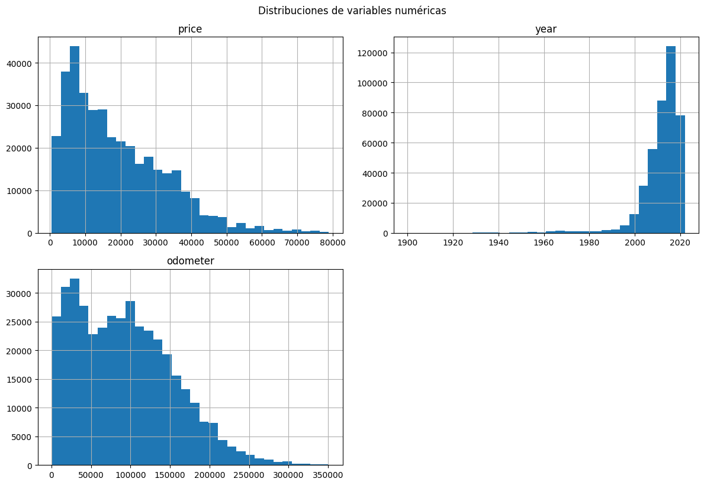
for numerica in num:
sns.boxplot(data=df_clean,y=numerica)
plt.title(f'Boxplot de {numerica}')
plt.show()
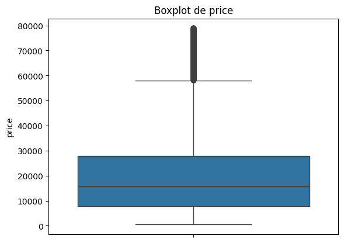
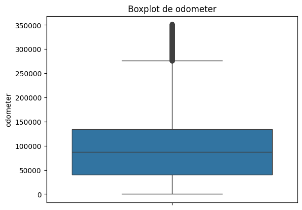
Podemos observar que los valores son mas razonables en las variables numericas. y si son valores reales de precios de autos usados
Realizamos nuevamente la matriz de correlacion
matriz_out=df_clean[num].corr()
plt.figure(figsize=(12,8))
sns.heatmap(matriz_out, annot=True, cmap="coolwarm", fmt=".2f")
plt.title("Matriz de correlación de variables numéricas")
plt.show()
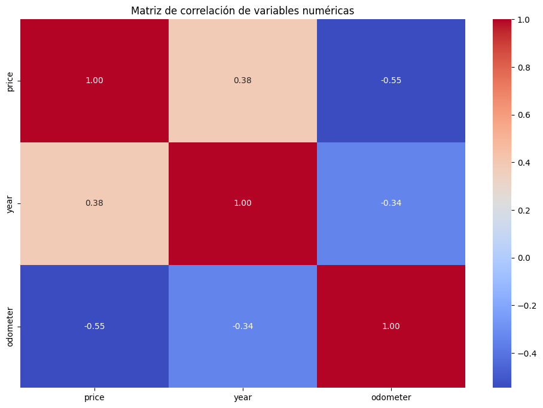
Podemos observar que gracias a la filtracion de los datos atipicos ahora existe una correlacion positiva entre el precio y el año
Gracias a esto ya se puede realizar el split de los datos para crear la variable objetivo de clasificacion
Split de los datos#
Clasificacion#
Creamos la variable objetivo HighDemand
df_class = df_clean.dropna(subset=['price']).copy()
df_class['HighDemand']=(df_class['price'] > df_class['price'].median()).astype(int)
X_clas=df_class.drop(columns=['price','HighDemand'])
Y_clas=df_class['HighDemand']
X_train_clas, X_test_clas, y_train_clas, y_test_clas = train_test_split(X_clas, Y_clas, test_size=0.2, random_state=0,stratify=Y_clas)
Regresion#
df_reg=df_clean.dropna(subset=['price']).copy()
X_reg=df_reg.drop(columns='price')
Y_reg=df_reg['price']
X_train_reg, X_test_reg, y_train_reg, y_test_reg = train_test_split(X_reg, Y_reg, test_size=0.2, random_state=0)
Imputacion de datos faltantes(NA)#
Se realiza la imputacion de datos faltantes antes de realizar OneHot y escalamiento
num_imput=["year","odometer"]
cat_imput=["manufacturer","fuel","title_status","transmission","drive","type","paint_color"]
cat_imput_long=["condition","cylinders","drive","type","paint_color"]
otras_cat = ["state","region"]
Se imputan las variables lat y long utilizando la mediana por state, debido a que no entran en ninguna otra categoria
X_train_clas["lat"] = X_train_clas.groupby("state")["lat"].transform(lambda x: x.fillna(x.median()))
X_train_clas["long"] = X_train_clas.groupby("state")["long"].transform(lambda x: x.fillna(x.median()))
lat_medians_clas = X_train_clas.groupby("state")["lat"].median()
long_medians_clas = X_train_clas.groupby("state")["long"].median()
X_test_clas["lat"] = X_test_clas["lat"].fillna(
X_test_clas["state"].map(lat_medians_clas)
)
X_test_clas["long"] = X_test_clas["long"].fillna(
X_test_clas["state"].map(long_medians_clas)
)
X_train_reg["lat"] = X_train_reg.groupby("state")["lat"].transform(lambda x: x.fillna(x.median()))
X_train_reg["long"] = X_train_reg.groupby("state")["long"].transform(lambda x: x.fillna(x.median()))
lat_medians_reg = X_train_reg.groupby("state")["lat"].median()
long_medians_reg = X_train_reg.groupby("state")["long"].median()
X_test_reg["lat"] = X_test_reg["lat"].fillna(
X_test_reg["state"].map(lat_medians_reg)
)
X_test_reg["long"] = X_test_reg["long"].fillna(
X_test_reg["state"].map(long_medians_reg)
)
Se imputa por la mediana a las variables numericas
imputer_num_clas = SimpleImputer(strategy="median")
X_train_clas[num_imput] = imputer_num_clas.fit_transform(X_train_clas[num_imput])
X_test_clas[num_imput] = imputer_num_clas.transform(X_test_clas[num_imput])
imputer_num_reg = SimpleImputer(strategy="median")
X_train_reg[num_imput]= imputer_num_reg.fit_transform(X_train_reg[num_imput])
X_test_reg[num_imput] = imputer_num_reg.transform(X_test_reg[num_imput])
Imputamos por la moda las variables categoricas con NA<20%
imputer_cat_clas = SimpleImputer(strategy="most_frequent")
X_train_clas[cat_imput] = imputer_cat_clas.fit_transform(X_train_clas[cat_imput])
X_test_clas[cat_imput] = imputer_cat_clas.transform(X_test_clas[cat_imput])
imputer_cat_reg = SimpleImputer(strategy="most_frequent")
X_train_reg[cat_imput] = imputer_cat_reg.fit_transform(X_train_reg[cat_imput])
X_test_reg[cat_imput] = imputer_cat_reg.transform(X_test_reg[cat_imput])
Para las categoricas mayor a 20% se les va a añadir una categoria llamada missing
X_train_clas[cat_imput_long] = X_train_clas[cat_imput_long].fillna("missing")
X_test_clas[cat_imput_long] = X_test_clas[cat_imput_long].fillna("missing")
X_train_reg[cat_imput_long] = X_train_reg[cat_imput_long].fillna("missing")
X_test_reg[cat_imput_long] = X_test_reg[cat_imput_long].fillna("missing")
Codificacion de categoricas#
encoder_clas = OneHotEncoder(handle_unknown="ignore",sparse_output=False)
encoder_reg = OneHotEncoder(handle_unknown="ignore",sparse_output=False)
all_cats = cat_imput + cat_imput_long + otras_cat
X_train_clas_encoded = pd.DataFrame(
encoder_clas.fit_transform(X_train_clas[all_cats]),
columns=encoder_clas.get_feature_names_out(all_cats),
index=X_train_clas.index
)
X_test_clas_encoded = pd.DataFrame(
encoder_clas.transform(X_test_clas[all_cats]),
columns=encoder_clas.get_feature_names_out(all_cats),
index=X_test_clas.index)
X_train_reg_encoded = pd.DataFrame(
encoder_reg.fit_transform(X_train_reg[all_cats]),
columns=encoder_reg.get_feature_names_out(all_cats),
index=X_train_reg.index
)
X_test_reg_encoded = pd.DataFrame(
encoder_reg.transform(X_test_reg[all_cats]),
columns=encoder_reg.get_feature_names_out(all_cats),
index=X_test_reg.index)
Estandarizacion de variables numericas#
scaler_clas=StandardScaler()
scaler_reg=StandardScaler()
num_cols_clas = X_train_clas.drop(columns=all_cats).columns
num_cols_reg = X_train_reg.drop(columns=all_cats).columns
X_train_num_clas = pd.DataFrame(
scaler_clas.fit_transform(X_train_clas[num_cols_clas]),
columns=num_cols_clas,
index=X_train_clas.index
)
X_test_num_clas = pd.DataFrame(
scaler_clas.transform(X_test_clas[num_cols_clas]),
columns=num_cols_clas,
index=X_test_clas.index
)
X_train_num_reg = pd.DataFrame(
scaler_reg.fit_transform(X_train_reg[num_cols_reg]),
columns=num_cols_reg,
index=X_train_reg.index
)
X_test_num_reg = pd.DataFrame(
scaler_reg.transform(X_test_reg[num_cols_reg]),
columns=num_cols_reg,
index=X_test_reg.index
)
Se concatena con los categoricos codificados
X_train_clas_final = pd.concat([X_train_num_clas, X_train_clas_encoded], axis=1)
X_test_clas_final = pd.concat([X_test_num_clas, X_test_clas_encoded], axis=1)
X_train_reg_final = pd.concat([X_train_num_reg, X_train_reg_encoded], axis=1)
X_test_reg_final = pd.concat([X_test_num_reg, X_test_reg_encoded], axis=1)
Modelos normales#
Modelo clasificacion#
X_train_clas_final=X_train_clas_final.astype("float32")
model = LogisticRegression(
solver="saga",
max_iter=1000,random_state=0
)
model.fit(X_train_clas_final,y_train_clas)
y_pred = model.predict(X_test_clas_final)
# Accuracy
print("Accuracy:", accuracy_score(y_test_clas, y_pred))
# Precision, Recall, F1
print("Precision:", precision_score(y_test_clas, y_pred, average="weighted"))
print("Recall:", recall_score(y_test_clas, y_pred, average="weighted"))
print("F1-score:", f1_score(y_test_clas, y_pred, average="weighted"))
# Matriz de confusión
print("\nMatriz de confusión:")
print(confusion_matrix(y_test_clas, y_pred))
# Reporte detallado por clase
print("\nReporte de clasificación:")
print(classification_report(y_test_clas, y_pred))
Accuracy: 0.8614763323402846
Precision: 0.8615189288895032
Recall: 0.8614763323402846
F1-score: 0.8614722399122225
Matriz de confusión:
[[32737 5026]
[ 5436 32326]]
Reporte de clasificación:
precision recall f1-score support
0 0.86 0.87 0.86 37763
1 0.87 0.86 0.86 37762
accuracy 0.86 75525
macro avg 0.86 0.86 0.86 75525
weighted avg 0.86 0.86 0.86 75525
print("Training set score: {:.3f}".format(model.score(X_train_clas_final, y_train_clas)))
print("Test set score: {:.3f}".format(model.score(X_test_clas_final, y_test_clas)))
Training set score: 0.864
Test set score: 0.861
Podemos observar que en este modelo inicial como esta los valores nos dan aproximadamente 0.86 tanto en train como en test en el acuraccy. Analizando en las otras metricas podemos observar que los valores son consistentes entre 0.86 y 0.87
Esto se utilizara de comparacion mas adelante cuando se ejecute el Gridsearch
Modelo Ridge#
X_train_reg_final=X_train_reg_final.astype("float32")
ridge=Ridge(max_iter=1000,random_state=0,alpha=1.0)
ridge.fit(X_train_reg_final,y_train_reg)
Ridge(max_iter=1000, random_state=0)In a Jupyter environment, please rerun this cell to show the HTML representation or trust the notebook.
On GitHub, the HTML representation is unable to render, please try loading this page with nbviewer.org.
Ridge(max_iter=1000, random_state=0)
print("Training set score: {:.3f}".format(ridge.score(X_train_reg_final, y_train_reg)))
print("Test set score: {:.3f}".format(ridge.score(X_test_reg_final, y_test_reg)))
Training set score: 0.626
Test set score: 0.623
Modelo Lasso#
lasso=Lasso(max_iter=1000,random_state=0,alpha=1.0)
lasso.fit(X_train_reg_final,y_train_reg)
Lasso(random_state=0)In a Jupyter environment, please rerun this cell to show the HTML representation or trust the notebook.
On GitHub, the HTML representation is unable to render, please try loading this page with nbviewer.org.
Lasso(random_state=0)
print("Training set score: {:.3f}".format(lasso.score(X_train_reg_final, y_train_reg)))
print("Test set score: {:.3f}".format(lasso.score(X_test_reg_final, y_test_reg)))
Training set score: 0.625
Test set score: 0.623
Busqueda de Hiperparametros mediante GridSearch#
Busqueda de Hiperparametro C#
Se realiza la busqueda mediante GridSearch del hiperparametro C para el modelo de regresion Logistica
Verificamos primero con distintos valores de C para acotar el rango que vamos a usar en gridsearch